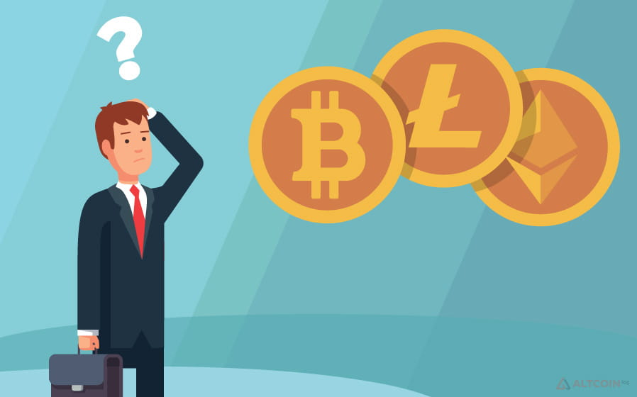
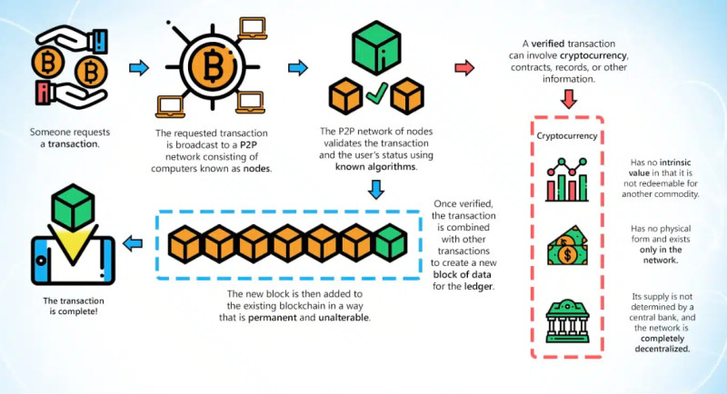
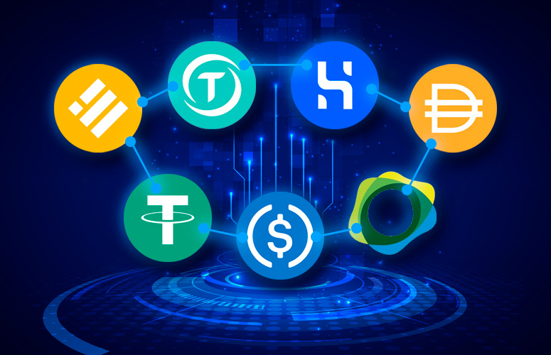
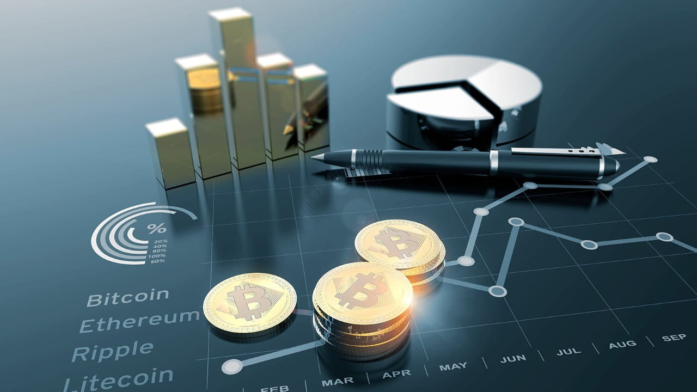
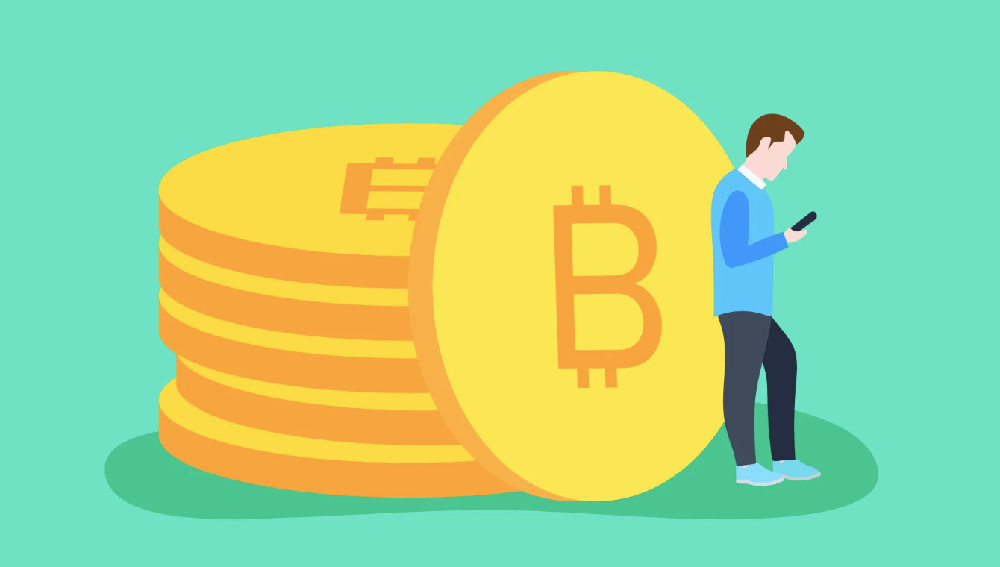

Криптовалюта для начинающих

Несмотря на то, что электронные деньги появились более десяти лет назад, многие пользователи до сих пор относятся к ним с осторожностью и не рассматривают как актив, с помощью которого можно получать прибыль.
Для того, чтобы эти страхи рассеять, мы попробуем подробно разобраться в данной теме и разъяснить все основные вопросы, касающиеся цифровых валют. Данная тема как никогда актуальна сейчас в связи с повсеместной цифровизацией.
Что такое криптовалюта

Криптовалюта для начинающих – это цифровой, или виртуальный актив, не имеющий реального или материального эквивалента. Для того, чтобы узнать, как работает криптовалюта, рассмотрим ее основные характеристики.
Итак, это цифровые деньги, которые существуют только онлайн. Снять их со счета и потрогать не получится. Однако на специальных платформах их можно обменять на другие известные валюты, такие как доллар или евро и вывести эти деньги.
Виды криптовалют

В настоящее время в мире насчитывается более 20 тысяч различных цифровых валют. Все криптовалюты можно условно разделить на несколько основных видов:
- Биткоин
- Альткоины
- Стейблкоины
- Токены
Краткая история появления

Идея создания электронных денег появилась задолго до ее реального появления. Два американских ученых, Д. Чаум и С. Брэндс, представили свою концепцию использования цифровой валюты в 1980-х годах.
С тех пор прошло много времени, и в 2009 году была выпущена первая криптовалюта – биткоин версии 0.1, разработанная Сатоши Накамото.
Криптовалюта для начинающих тогда и сейчас
В настоящее время стоимость биткоина превышает 38 тысяч долларов за монету, однако данная криптовалюта не всегда имела такую высокую ценность. Когда появилась криптовалюта, ее не воспринимали всерьез и ее курс к доллару США составлял всего несколько центов.
Поначалу добывать монеты было сравнительно легко

Поначалу добывать монеты было сравнительно легко, и у майнеров были большие запасы крипты, а тратить ее было некуда. Известна история, когда один из пользователей на форуме предложил заплатить 10 тысяч биткоинов человеку, который закажет для него пиццу. Нашелся пользователь, который согласился на эту сделку, он заказал для первого две пиццы, а взамен получил 10 тысяч биткоинов на свой счет.
Спустя год эта сумма была эквивалентна уже $100 000, а через два года – $9 000 000. В настоящее время эта сумма равна примерно $380 000 000, а две пиццы, купленные за 10 тыс. биткоинов, считаются самыми дорогими в мире. Известны также истории покупки джинсов, футболок и других товаров.
В настоящее время криптовалютный рынок продолжает расти и развиваться, появляются новые монеты, их число уже превышает 20 000. Одни проекты оказываются более успешными, другие быстро исчезают с арены.
Что можно делать с криптой
Как уже упоминалось, криптовалюты не являются материальным объектом и существуют только в цифровом пространстве. Тем не менее, по мере их развития они преобразуются в реальное платежное средство, а также объект инвестиций.
Как пользоваться криптовалютой и для чего ее можно применять, попробуем разобраться в данном разделе. Итак, можно ли рассчитываться криптой? Уже да. Преимущественно для совершения онлайн платежей, но все же. Помимо этого, в сети кофеен Старбакс также можно платить цифровыми валютами.
Следующее применение, одно из наиболее распространенных – это обмен электронных денег на фиатные. Такие обмены производятся на специализированных биржах, после чего деньги уже в национальной валюте можно перевести на свой банковский счет.
Криптовалюты прекрасно подходят для трейдинга, то есть краткосрочных спекулятивных сделок на изменении стоимости той или иной монеты. Это обусловлено высокой волатильностью крипты, то есть изменением стоимости на несколько процентов даже в течение одного торгового дня.
Помимо этого, цифровые деньги рассматриваются как объект для инвестиций, правда, в основном это касается наиболее известных монет. Несмотря на то, что их курс может меняться в течение дня, в долгосрочной перспективе они демонстрируют стабильный рост. Поэтому многие инвесторы добавляют их в свои инвестиционные портфели.
Как можно зарабатывать на крипте
Мы уже вскользь упоминали в предыдущем разделе о том, что криптой можно не только рассчитываться, но и также получать доход с ее помощью. О том, как заработать на криптовалюте, мы и поговорим более подробно в данном разделе.
Для получения дохода от цифровых денег существует несколько наиболее распространенных способов:
- Майнинг – добыча новых монет. Мы уже говорили о том, что майнеры получают вознаграждение за добычу криптовалюты. Как правило, данное вознаграждение также выражается в крипте, которую можно впоследствии использовать по своему усмотрению;
- Облачный майнинг – одна из разновидностей пассивной добычи, когда пользователь лишь инвестирует деньги в проект по добыче крипты, однако самостоятельно этим не занимается. Необходимое оборудование стоит дорого, поэтому майнеры соглашаются на такие сделки;
- Трейдинг – совершение краткосрочных сделок с электронными деньгами. Данный актив, как никакой другой, подходит для этих целей, так как его стоимость может существенно изменяться в пределах одного торгового дня. На этих краткосрочных изменениях трейдеры и получают прибыль;
- Холдинг, в отличие от трейдинга, подразумевает покупку цифровых валют и удержания их до того момента, пока они не вырастут в цене. После того, как актив достигает целевой отметки по стоимости, владелец его продает. Однако может случиться и так, что монета не вырастет в цене;
- Создание собственной криптовалюты – главное в этом случае, чтобы валюта представляла определенную ценность: являлась ключом доступа к каким-либо сервисам или представляла некий финансовый актив;
- Вложение в криптофонд – это аналог доверительного управления. Пользователь вкладывает деньги в фонд, а фонд выбирает цифровые монеты, в которые будут вкладываться средства. Впоследствии прибыль распределяется между всеми участниками пропорционально их вкладу;
- ICO – аналог IPO в криптовалюте. Когда компания хочет выпустить новые монеты, но не имеет достаточного финансирования, она привлекает средства инвесторов. Однако нужно понимать, что проект может так и не «выстрелить», и заработать на этом не получится.
Заработок без вложений
Вопрос, можно ли заработать на криптовалюте, не вкладывая свои деньги, интересует многих. Ответ положительный: существует несколько способов, доступных всем желающим.
- Партнерские программы – вы привлекаете новых клиентов на криптобиржи, они совершают сделки, а вы получаете часть комиссии с каждой их сделки.
- Биткоин краны и PTC веб-сайты – позволяют получить вознаграждение за выполнение простых заданий, например, просмотр роликов, регистрация или размещение информации на форумах.
- Создание NFT – для творческих людей, которые могут создавать уникальные произведения и продавать их в виде NFT.
- Обучение – разработка гайдов, курсов и статей для начинающих, что может стать источником дохода для опытных пользователей.
- AirDrop-проекты – маркетинговая стратегия, при которой раздают монеты пользователям бесплатно за выполнение простых действий, например, подписку на сообщество.
- Выполнение заданий с оплатой в крипте – за выполнение заданий на тестирование новых функций можно получить вознаграждение.
Как покупать и хранить криптовалюту
Для приобретения криптовалюты рекомендуется использовать специализированные криптобиржи. Важно выбирать надежные платформы, которые обеспечивают безопасность, например, с процессом верификации пользователей.
Что касается хранения криптовалюты, она может храниться в горячих и холодных кошельках. Горячие кошельки — это онлайн-ресурсы, которые удобны для совершения транзакций, но имеют риск взлома. Холодные кошельки, такие как устройства, напоминающие флешки, значительно безопаснее, так как не подключены к интернету.
Преимущества и недостатки криптовалют
Преимущества:
- Отсутствие материального носителя.
- Децентрализация.
- Отсутствие влияния инфляции.
- Анонимность операций.
- Прямые платежи по всему миру.
Недостатки:
- Волатильность.
- Риски хакерских атак.
- Утеря доступа к кошельку.
- Отсутствие реального обеспечения.
- Правовые проблемы.
Советы для начинающих
- Пройдите обучение перед началом работы с криптовалютой.
- Начните с небольших вложений.
- Используйте безопасные кошельки и биржи.
- Не инвестируйте все свои деньги в криптовалюту.
- Будьте готовы к волатильности.